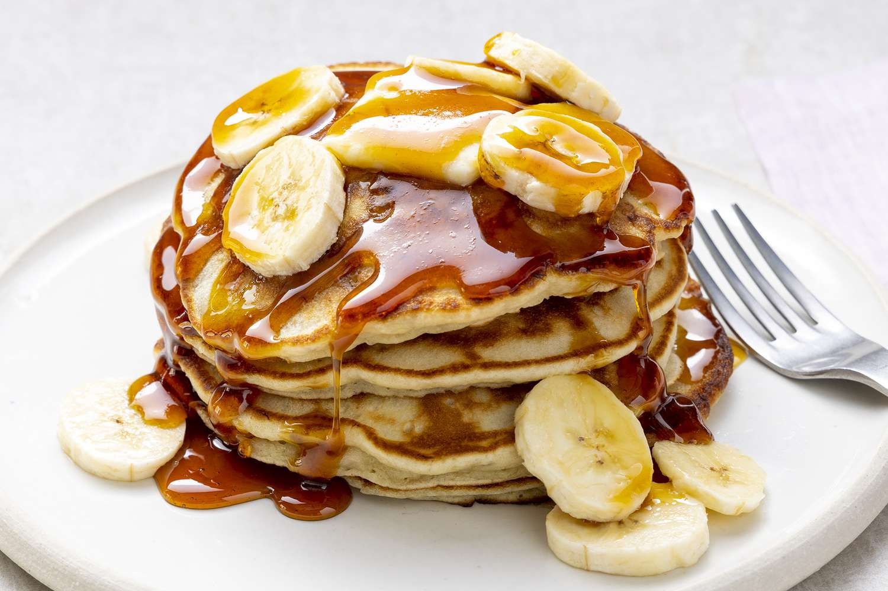

Banana Pancakes

Minimal ingredients. Maximum flavour. A staple pancake topping — bananas. These Banana Pancakes take just minutes to prepare, and the pay off is outrageous
Ingredients required
- 3 Bananas
- 3 Eggs
- 6 Tbsp Self-Raising Flour
Steps
- Mash up the bananas in the bowl and add in the eggs and flour. Whisk until combined, don't worry if it's not totally smooth.
- Heat a large non-stick frying pan over medium heat, brush over some vegetable oil, and a ladle of pancake batter.
- Cook on a low/medium heat for 3 mins on either side.
- Serve on a plate with your favourite toppings, our favourite is maple syrup and butter.